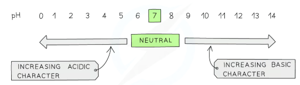
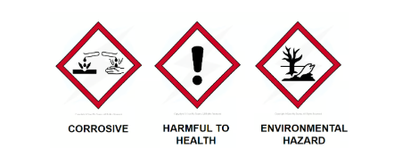
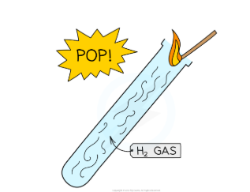
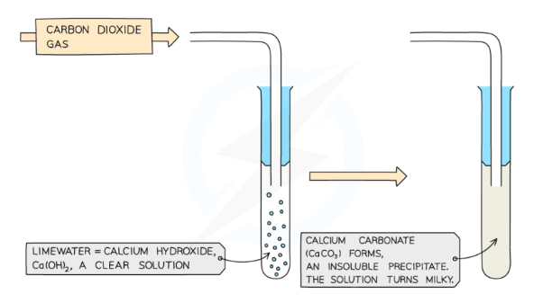
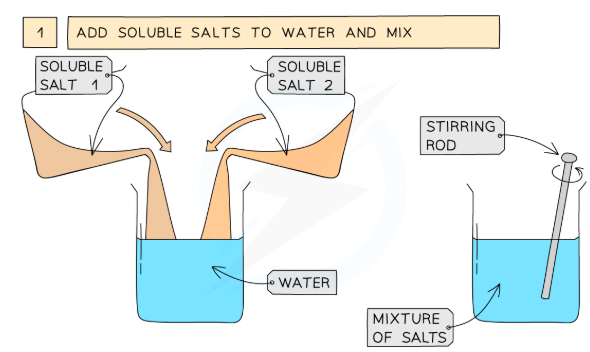
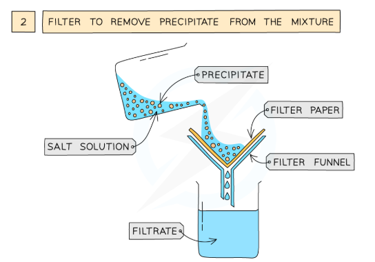
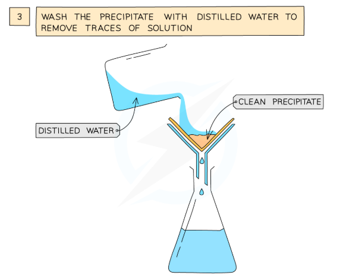
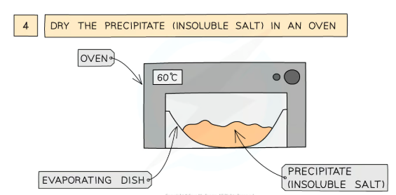
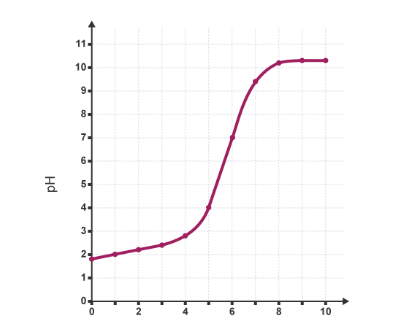
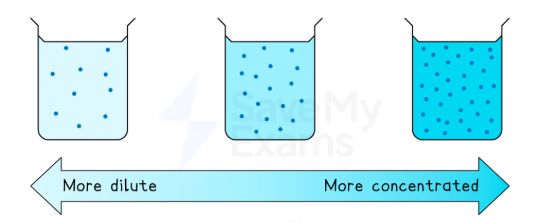

The pH scale runs from 0 to 14 and tells you how acidic or alkaline a solution is. Acids have pH below 7, water is exactly 7, and alkalis are above 7. The further from 7, the stronger the acid or alkali.
The pH scale
Figure 1 — The pH scale: 0 = most acidic, 14 = most alkaline, 7 = neutral.

Figure 2 — The pH scale: numbers below 7 are acidic, above 7 are alkaline, with 7 being neutral.
Key vocabulary
| Term | Meaning |
|---|---|
| Acid | A substance with pH below 7; produces H+ ions in aqueous solution |
| Alkali | A soluble base with pH above 7; produces OH− ions in aqueous solution |
| Base | A substance that neutralises an acid (includes alkalis, metal oxides, carbonates) |
| Neutral | pH = 7; equal concentrations of H+ and OH− ions |
| Neutralisation | Acid + base reaction producing a salt and water: H+ + OH− → H2O |
Indicators
Universal indicator is used for approximate pH readings only — it gives a range of colours from red (very acidic) to violet (very alkaline).
A student tests a solution with universal indicator and it turns blue-green. Is the solution acidic, neutral or alkaline?
Acids react with metals, metal oxides, metal hydroxides and metal carbonates. Each reaction makes a salt. You need to know what the second product is in each case — and how to name the salt.

Figure 3 — Always check hazard symbols before using acids. Concentrated acids are corrosive.
The four reaction types — learn them all!
| Reaction type | General equation | Products |
|---|---|---|
| Acid + metal | acid + metal → salt + hydrogen | Salt + H2 gas |
| Acid + metal oxide | acid + metal oxide → salt + water | Salt + H2O |
| Acid + metal hydroxide | acid + metal hydroxide → salt + water | Salt + H2O |
| Acid + metal carbonate | acid + metal carbonate → salt + water + carbon dioxide | Salt + H2O + CO2 |
Naming the salt: the SNAC rule
The salt name has two parts: the metal from the base, and the anion from the acid. Use this simple lookup:
Figure 2 — Salt naming: the anion comes from the acid; the cation comes from the metal/base used.
Worked examples with equations
| Reaction | Word equation | Symbol equation |
|---|---|---|
| Acid + metal | hydrochloric acid + zinc → zinc chloride + hydrogen | 2HCl + Zn → ZnCl2 + H2 |
| Acid + metal oxide | sulfuric acid + copper oxide → copper sulfate + water | H2SO4 + CuO → CuSO4 + H2O |
| Acid + metal hydroxide | hydrochloric acid + sodium hydroxide → sodium chloride + water | HCl + NaOH → NaCl + H2O |
| Acid + carbonate | nitric acid + calcium carbonate → calcium nitrate + water + carbon dioxide | 2HNO3 + CaCO3 → Ca(NO3)2 + H2O + CO2 |
Testing for hydrogen gas
When an acid reacts with a metal, hydrogen gas is produced. Test for it with a lit splint held at the mouth of the tube. You should hear a squeaky pop.

Figure 4 — The squeaky pop test: a lit splint at the mouth of the tube ignites H₂ gas with a characteristic pop.
Testing for carbon dioxide
When an acid reacts with a carbonate, carbon dioxide is produced. Bubble the gas through limewater (calcium hydroxide solution). A white precipitate forms and the limewater turns milky.

Figure 5 — CO₂ test: limewater turns milky as insoluble calcium carbonate (CaCO₃) forms.
Write a word equation for the reaction between sulfuric acid and zinc carbonate. Name all the products.
The acid is sulfuric, so the salt is a sulfate. The carbonate reaction always produces three products, including CO2.
You can make a pure dry salt in the lab. The method depends on whether the salt dissolves in water (soluble) or doesn't (insoluble). Learn both methods separately.
● Making soluble salts (excess solid method)
- Add excess insoluble solid (e.g. copper oxide) to warm acid in a beaker
- Stir until no more solid dissolves (excess solid shows no acid remains)
- Filter off the excess solid
- Evaporate the filtrate gently to concentrate
- Leave to crystallise or heat carefully to dryness
● Making insoluble salts (precipitation)
- Mix two solutions containing the required ions
- The insoluble salt forms as a solid precipitate immediately
- Filter to collect the precipitate
- Wash with distilled water to remove any impurities
- Dry in a warm oven
Why add excess solid?
Adding excess solid (metal, metal oxide, or carbonate) ensures that all the acid is used up. Any leftover solid is simply filtered off. This guarantees no acid remains in the final salt solution. If you used excess acid, it would contaminate your crystals.
Figure 3 — The excess solid method for making a soluble salt (e.g. copper sulfate from copper oxide + sulfuric acid).
Precipitation method: step by step

Step 1 — Mix the two soluble salt solutions together.

Step 2 — Filter through filter paper to collect the precipitate.

Step 3 — Wash with distilled water to remove soluble impurities.

Step 4 — Dry the insoluble salt in an oven at 60°C.
Examples of each method
| Salt | Method | Reactants |
|---|---|---|
| Copper sulfate | Excess solid (soluble salt) | Copper oxide + sulfuric acid |
| Zinc chloride | Excess solid (soluble salt) | Zinc + hydrochloric acid |
| Sodium chloride | Titration (soluble salt) | Sodium hydroxide + hydrochloric acid |
| Barium sulfate | Precipitation (insoluble salt) | Barium chloride + sodium sulfate |
| Lead iodide | Precipitation (insoluble salt) | Lead nitrate + potassium iodide |
Watch: making copper sulfate crystals
A student wants to make lead iodide crystals. Which method should they use and why?
A titration is a precise way to find exactly how much acid is needed to neutralise a known amount of alkali (or vice versa). You use a burette to add the acid drop by drop and an indicator to spot the exact end point.
Equipment
- Burette — used to add the acid (or alkali) in measured amounts; graduated to 0.1 cm3
- Pipette — delivers an exact volume of alkali into the conical flask (usually 25.0 cm3)
- Conical flask — holds the alkali and indicator; easy to swirl without spilling
- White tile — placed under the flask to see the colour change clearly
- Indicator — phenolphthalein (turns colourless in acid) or methyl orange (turns red in acid)
Figure 4 — A standard acid-alkali titration: the burette holds the acid; the conical flask holds the alkali with indicator.
The method: step by step
- Rinse the pipette with the alkali solution; use it to transfer exactly 25.0 cm3 of alkali into the conical flask.
- Add a few drops of indicator (phenolphthalein turns pink in alkali).
- Fill the burette with acid. Record the initial burette reading.
- Add acid from the burette slowly, swirling the flask constantly.
- Near the end point, add acid drop by drop. Stop when one drop causes a permanent colour change (pink → colourless for phenolphthalein).
- Record the final burette reading. Calculate the titre: final − initial reading.
- Repeat until you have at least two concordant results (within 0.10 cm3 of each other).
- Calculate the mean titre using only the concordant results.
The titration curve
If you plot pH against volume of acid added, you get a characteristic S-shaped curve. The steepest part (where pH changes rapidly) marks the equivalence point — where acid and alkali have exactly neutralised each other.

Figure 6 — A typical titration curve (acid added to alkali). pH starts high, drops steeply near the equivalence point, then levels off.
Recording and processing results
| Rough | Run 1 | Run 2 | Run 3 | |
|---|---|---|---|---|
| Initial reading (cm3) | 0.00 | 0.00 | 0.15 | 0.00 |
| Final reading (cm3) | 24.80 | 23.65 | 23.80 | 23.75 |
| Titre (cm3) | 24.80 | 23.65 | 23.65 | 23.75 |
Concordant results are Runs 1 and 2 (both 23.65 cm3). Mean titre = (23.65 + 23.65) ÷ 2 = 23.65 cm3. The rough titre and Run 3 are not included.
Watch: how to do a titration
- Including the rough titre in the mean — never do this; it is just a guide
- Giving the mean to only 1 decimal place — always quote to 2 d.p. (same precision as the burette)
- Using non-concordant results in the mean — only include results within 0.10 cm3
- Saying "the solution turns colourless" without specifying the indicator used
A student records titres of 24.15, 23.90, 23.95 and 23.85 cm3. Which results should she use to calculate the mean? What is the mean titre?
Mean = (23.90 + 23.95 + 23.85) ÷ 3 = 23.90 cm3.
A strong acid fully ionises in water — it splits apart completely into H+ ions. A weak acid only partially ionises — most of it stays as intact molecules. Same concentration does NOT mean same pH!
Ionisation: complete vs. partial
Figure 5 — Strong acid (left) fully ionises; weak acid (right) only partially ionises. Both at the same concentration, the strong acid has a much lower pH.
Key comparison table
| Strong acid | Weak acid | |
|---|---|---|
| Examples | HCl, H2SO4, HNO3 | CH3COOH (ethanoic), HF, citric acid, carbonic acid |
| Ionisation | Complete: HA → H+ + A− | Partial: HA ⇌ H+ + A− |
| pH (same concentration) | Lower (more H+ ions) | Higher (fewer H+ ions) |
| Reactivity with metals | Faster (more H+ available) | Slower at same concentration |
| Electrical conductivity | Higher (more ions) | Lower (fewer ions) |
Effect of dilution
When you dilute an acid by a factor of 10 (e.g. add 9 parts water to 1 part acid), the H+ concentration decreases by a factor of 10. This increases the pH by exactly 1 unit for a strong acid. For a weak acid, diluting also shifts the equilibrium to the right, producing more ions — so the pH increases by less than 1 unit per 10× dilution.

Figure 7 — Concentration refers to how many particles are dissolved per litre. Strength refers to how completely those particles ionise. These are independent properties.
Two solutions both have concentration 0.1 mol/dm3. Solution A is hydrochloric acid; solution B is ethanoic acid. Which has the lower pH? Explain why.
Acids questions are worth a lot of marks on Paper 1. Lose the easy ones and it dents your grade. Here are the patterns from mark schemes and examiner reports.
The SHAPE checklist for reactions of acids
Every time you write a reaction of an acid, run through SHAPE:
Most common exam errors (from Edexcel examiner reports)
| Mistake | Fix it |
|---|---|
| Forgetting CO2 in carbonate reactions | If carbonate is a reactant, CO2 must be a product — no exceptions |
| Naming the salt wrong (e.g. "sulfuric salt" instead of sulfate) | Learn the three acid names: chloride / sulfate / nitrate |
| Confusing "strong" with "concentrated" | Strong = fully ionised; concentrated = high mol/dm3 |
| Including the rough titre in the mean | Only use concordant repeats (within 0.10 cm3) |
| Writing H2 when the acid reacts with an oxide (not a metal) | Acid + oxide → salt + water only (no hydrogen gas!) |
| Saying the indicator tells you the exact pH | Only universal indicator gives approximate pH; litmus is acid/alkali only |
6-mark question strategy
Acids commonly appears as a 6-mark extended writing question on the preparation of a named salt. Use this structure:
- State the method you will use and why (excess solid, precipitation, or titration).
- Name the two reactants you need and their states.
- Describe the practical steps in logical order (mixing, filtering, evaporating, drying).
- State the evidence that the reaction is complete (no more solid dissolves; OR precipitate forms on mixing).
- Describe the purification step (filtration / washing with distilled water).
- Describe the drying step and the final product obtained.
1. What colour does phenolphthalein turn at the end point of a titration (acid added to alkali)?
2. Name the three products when hydrochloric acid reacts with calcium carbonate.
3. Give one difference between a strong and a weak acid of equal concentration.
2. Calcium chloride + water + carbon dioxide (CaCl2 + H2O + CO2).
3. The strong acid has a lower pH / greater electrical conductivity / reacts faster with metals — because it is fully ionised and has a higher concentration of H+ ions.